Saga Saiyan
4 años después del Torneo Mundial 23º, una amenaza llamada Saiyan se avecina a la Tierra. Goku descubre sus verdaderos orígines; y ahora los Guerreros Z deben pelear por el futuro del planeta.
Saga de Freezer
Luego de la desaparición de las Esferas del Dragón, Bulma, Krilin y Gohan parten al planeta natal de Kami y Piccolo para revivir a sus amigos fallecidos en la batalla contra los Saiyan, usando las Esferas del Dragón originales.
Saga de Garlic Jr.
Meses después de la batalla en Namek, Garlic Jr. logra escapar de su encierro con el fin de acabar con Kami y Piccolo, y a su vez convertirse en el nuevo dios de la Tierra.
Saga de Cell
Un joven del futuro advierte a Goku sobre una gran amenaza que asechará la Tierra dentro de 3 años, por lo que él y los Guerreros Z se ponen un duro entrenamiento para estar preparados para lo que sería, la batalla por el futuro del mundo.
Saga del Torneo del Otro Mundo
Una vez lograda la paz, Goku busca nuevos retos ante los peleadores del Otro Mundo, en donde participaría en un torneo para saber quién será el discípulo del Gran Kaio.
Saga de Majin Boo
Artículo principal: Saga de Majin Boo.
Han pasado ya 7 años de la derrota de Cell y la paz reina en la Tierra. Hasta que el mago Babidi llega al planeta con el fin de despertar a Majin Boo. Ahora los Guerreros Z deben evitar que el malvado cumpla sus planes y salvar al universo.
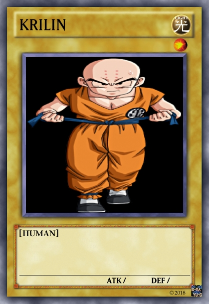 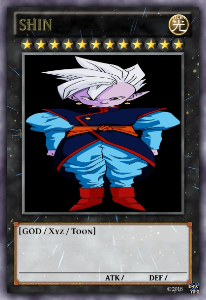
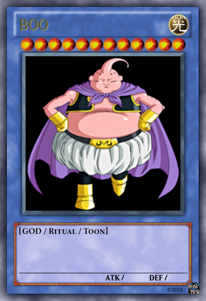 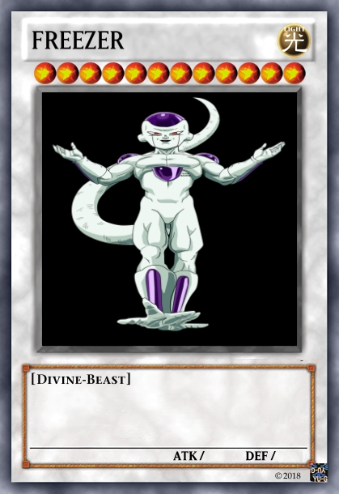
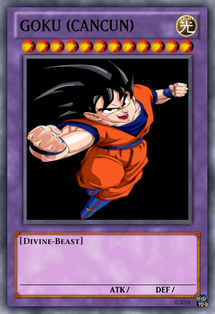 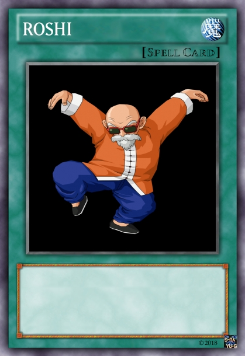
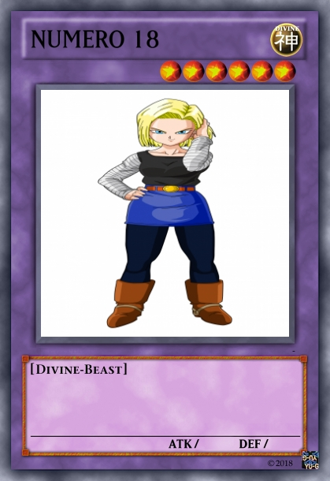 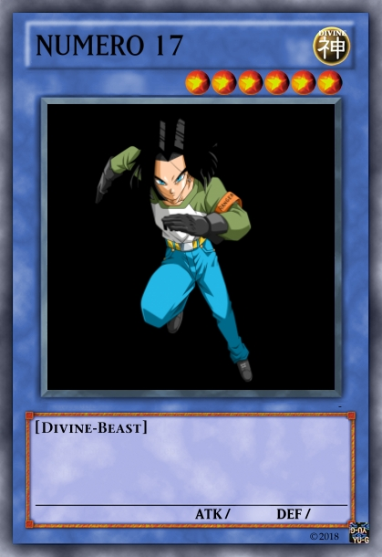
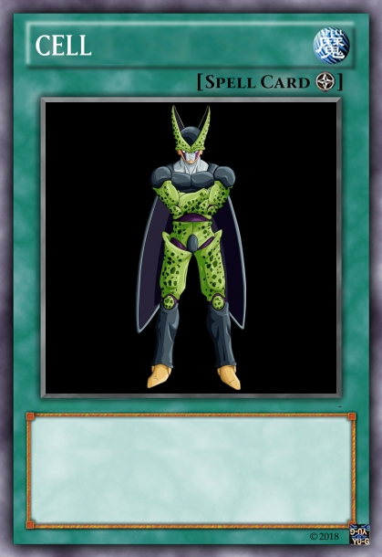 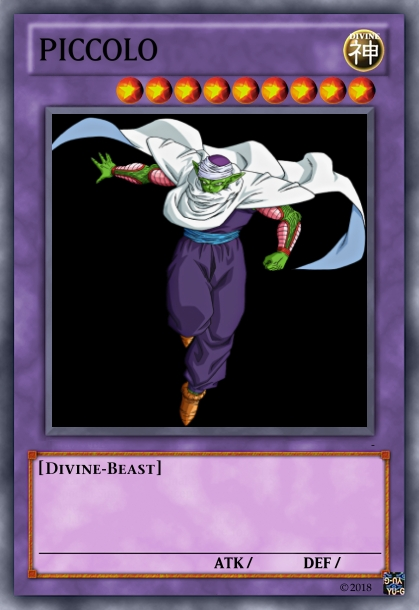
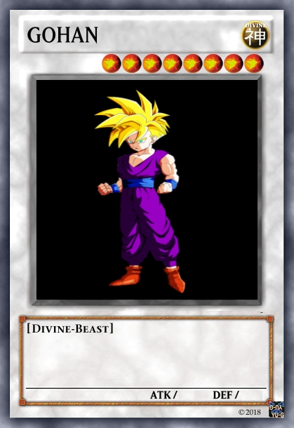 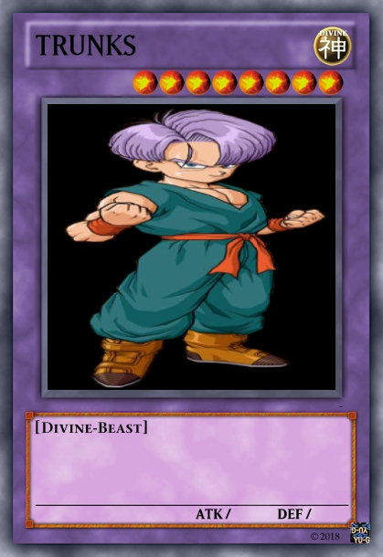
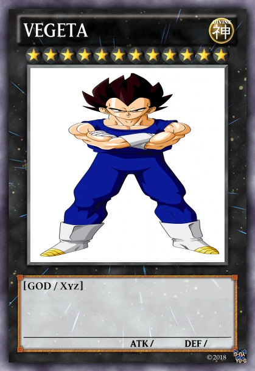